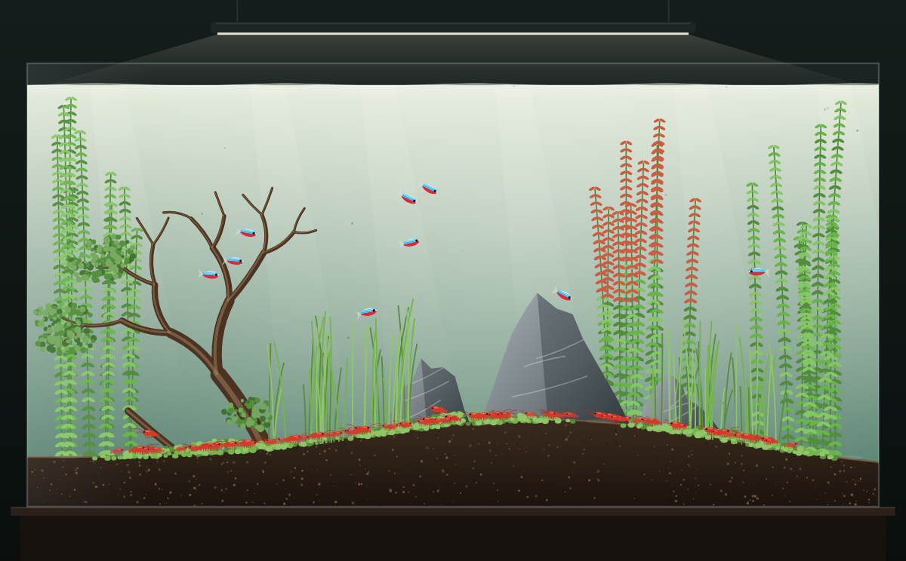

James’s Nature Aquarium水草
Version 3.1 · Launched
Start with an empty tank and build a living ecosystem in the style of Takashi Amano. Add plants, stones, shrimp, fish, light — even a turtle — then watch a week go by. Keep everything in balance to reach a Harmony score of 90.
Play